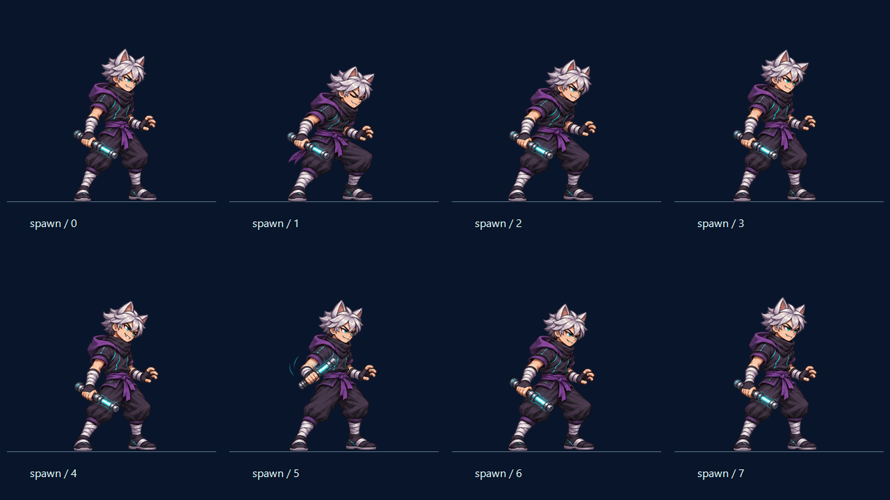
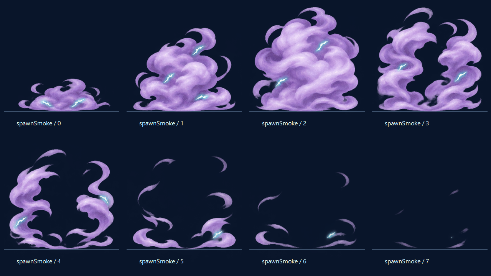
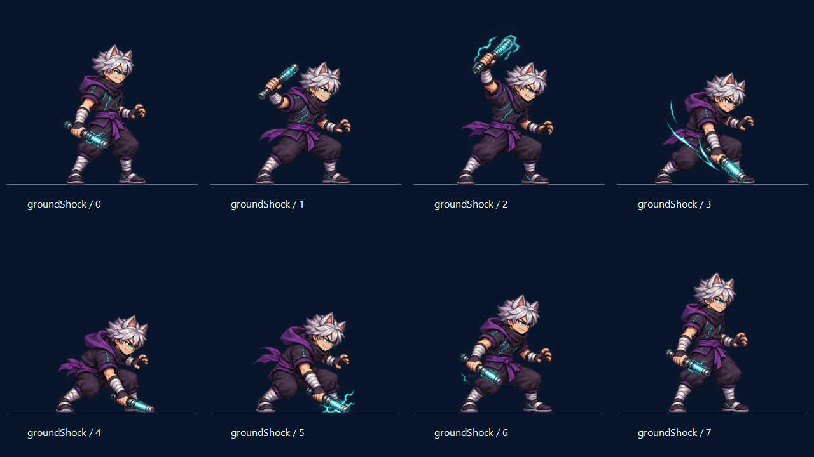
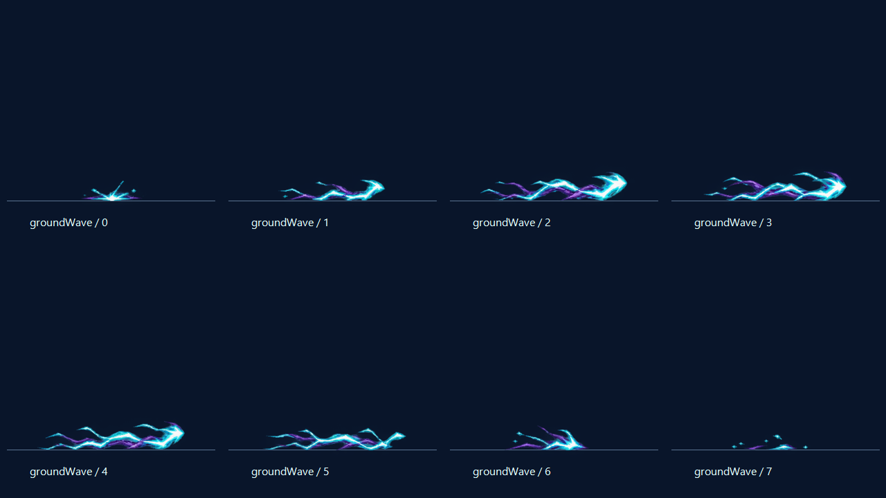
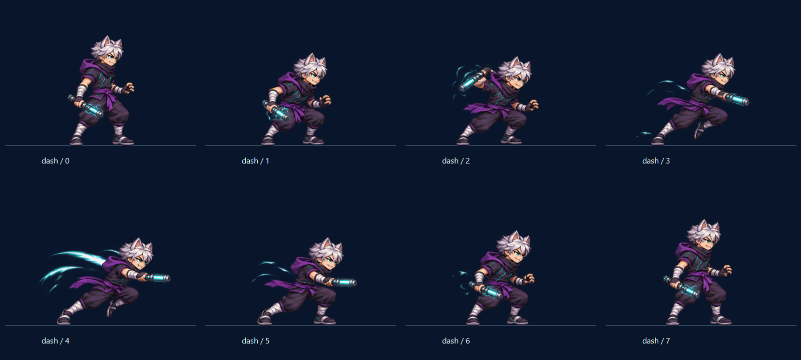
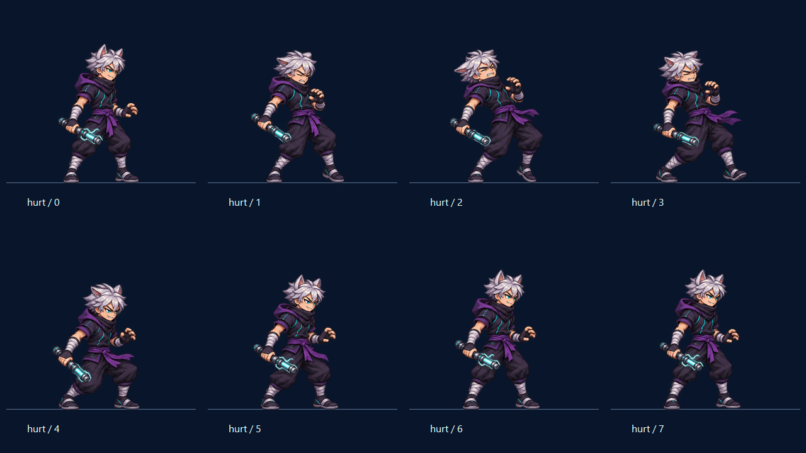
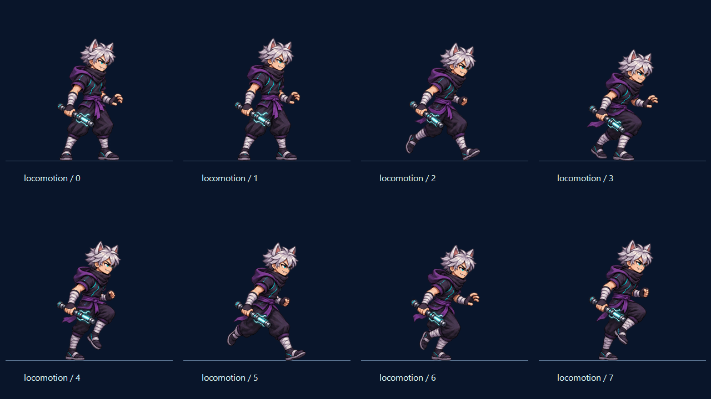
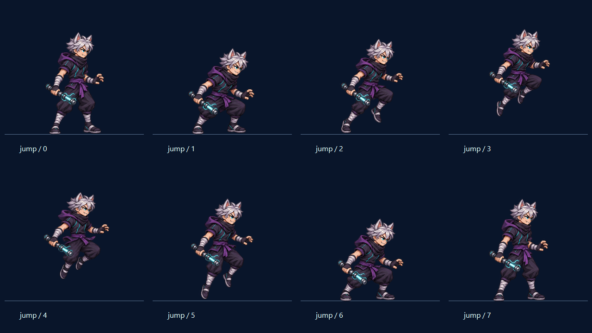
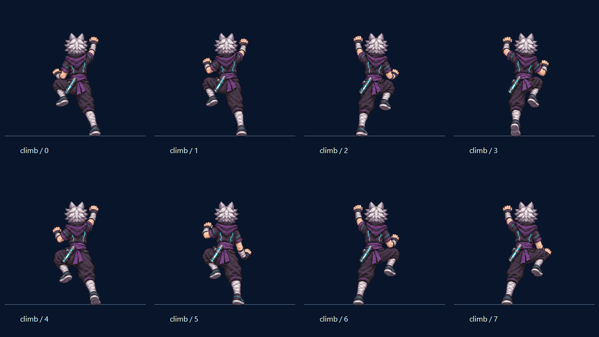
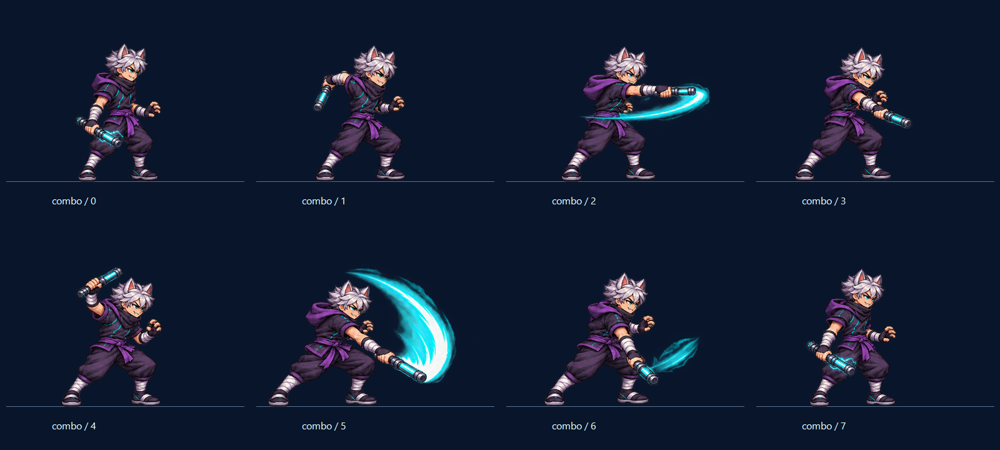

TASK10.2 · THIẾT KẾ ĐÃ CHỐT / ANIMATION CANDIDATE
NINJA SÓI ĐIỆN · XUẤT HIỆN TỪ KHÓI ĐIỆN
Giữ tạo hình v1 và mức thấp hơn Ninja khoảng12%. Chọn từng clip để xem chuyển động, dừng/tua từng frame hoặc đối chiếu bóng tạo hình. Đây là preview art; chưa có quái trong game.
Mới: khói lavender cuộn lên với tia cyan → bóng dáng hiện rõ → tai động/mắt sáng → nghiêng đầu cười → xoay nhẹ gậy và vào thế thủ. Skill2 đã được bạn chốt; các ảnh cũ giữ nguyên. Báo cáo màn xuất hiện. Đây là art preview, chưa thêm quái hoặc luật xuất hiện vào game.
Đang tải atlas…
Thang được vẽ riêng và đứng yên, không nằm trong PNG. Khi leo, gậy cài ở đai để hai tay bám; leo lên và xuống dùng hai nhóm pose riêng, không lật cả hình. Nhịp, đường nhảy và thang ở đây chỉ để review, chưa phải physics/AI/tốc độ hay khoảng nghỉ combat đã chốt.
Màn xuất hiện minh hoạ2,32giây; khói tan trước khi kết thúc tư thế sẵn sàng. Tắt “Nhân vật” để xem riêng khói; tắt “Khói điện” và “Hiện dần” để xem rõ tai, nụ cười và xoay gậy. Pose0 là guard chuẩn so cỡ. Các clip/skills đã duyệt vẫn ở các nút phía trên; nhịp này chưa là thời gian spawn hoặc bất tử trong game.
Bảng pose để xem kỹ

Nhân vật · guard0 · hiện1–2 · tai/mắt3 · cười4 · xoay/bắt gậy5–6 · sẵn sàng7.

VFX riêng · khói bật0 · nở1–2 · tách3–4 · wisps/tan5–7.

Skill2 · guard0 · giơ gậy1–2 · bổ/chạm đất3–4 · giữ lực/hồi thế5–7.

FX riêng · sinh0 · lan1–4 · hết tầm5 · bị chặn6 · tan7.

Điện Quang Đột Kích · guard0 · cảnh báo1–2 · lao3–5 · thu thế6–7.

Trúng đòn:guard0 → giật1 → ngả2 → lùi3 → lấy thăng bằng4 → hồi thế5–7.

Đứng/thở:0–1 · di chuyển:2–7.

Nhảy:0–7 · giữ vị trí chân gốc khi co chân trên không.

Leo lên:0–3 · xuống:4–7 · gậy giữ cùng bên đai.

Electric Baton v2 · hai lần vung, cung chéo xa hơn ở đòn2, follow-through và thu thế.
Báo cáo / giới hạn · Tạo hình đã chốt · Metadata atlas